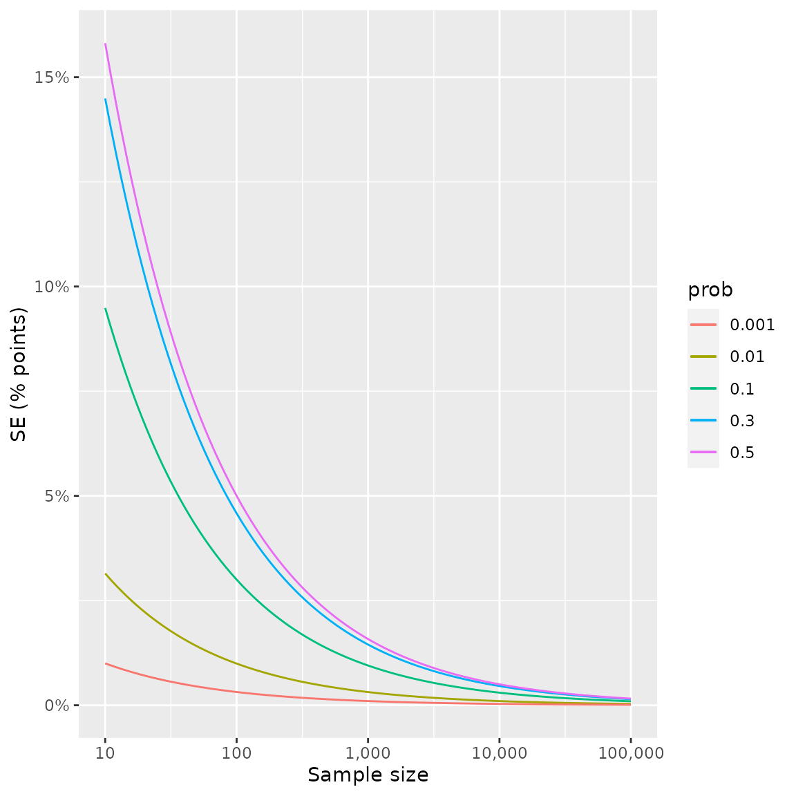
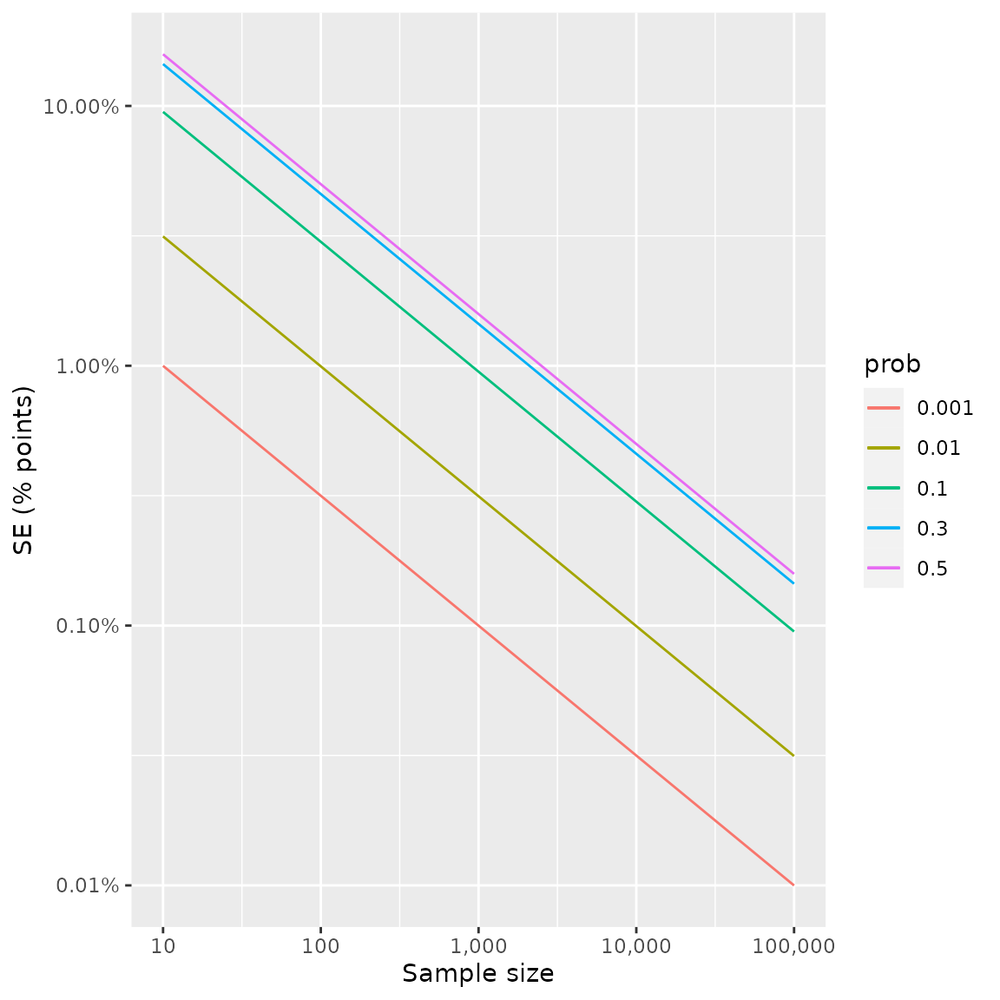

Here we plot the standard error of the standard estimator for a binomial probability, by sample size and underlying success probability:
library(ggplot2)
binom.SEs = function(p = .7, n = 100) sqrt(p*(1-p)/n)
plot1 = ggplot() +
# xlim(c(0, 10000)) +
geom_function(fun = ~binom.SEs(n = .x, p = .3), aes(color = "0.3")) +
geom_function(fun = ~binom.SEs(n = .x, p = .5), aes(col = "0.5")) +
geom_function(fun = ~binom.SEs(n = .x, p = .1), aes(col = "0.1")) +
geom_function(fun = ~binom.SEs(n = .x, p = .01), aes(col = "0.01")) +
geom_function(fun = ~binom.SEs(n = .x, p = .001), aes(col = "0.001")) +
scale_x_log10(limits = c(10,10^5), labels = scales::label_number(big.mark = ",")) +
scale_color_discrete(name = "prob") +
ylab("SE (% points)") +
xlab("Sample size")
plot1 + scale_y_continuous(labels = scales::percent_format())
A logarithmic y-axis helps us identify cutoffs for desired levels of precision:
plot1 + scale_y_continuous(labels = scales::percent_format(), trans = "log10")
binom.SEs(n = 2500, p = .5)
#> [1] 0.01